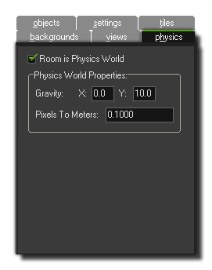

The addition of physics to GameMaker: Studio means that
you can add a much greater level of realism to your games, with
better collisions and movement than ever before. However this is
not always necessary, nor is it the default behaviour for your
game. If you do wish to use physics, you must tell GameMaker:
Studio this and set up some basic parameters, both in your
object resources (see - More about Objects:
Physics) and in your rooms.
 Before your room can
use physics you must tick the option at the top of this tab
labelled Room is Physics World. Once you have done that you
can then continue on to set up the Physics World Properties,
which are some basic properties that you must have pre-defined
before your room will allow physics objects to work as such. For a
more precise control over the world you can use code (see -
The Physics
Functions for more information).
The next thing you must do is set up the Gravity of the
world, and the strength and direction of this is calculated as a
vector
of the x/y position that you set. So, an x of 0 and a y of 1 will
set the gravity direction as being down with a force of 1 metre per
second (for a more detailed explanation see -
The Physics World: Gravity). Finally you must set the ratio of
Pixels To Meters for GameMaker: Studio to use as a
base for all its physics calculations. This is because the physics
functions work on real-world measurements, which is why we must set
this value, and you'll want to adjust this setting until the
average pixel size of the objects you are using translates roughly
into simulated physics objects of an appropriate size.